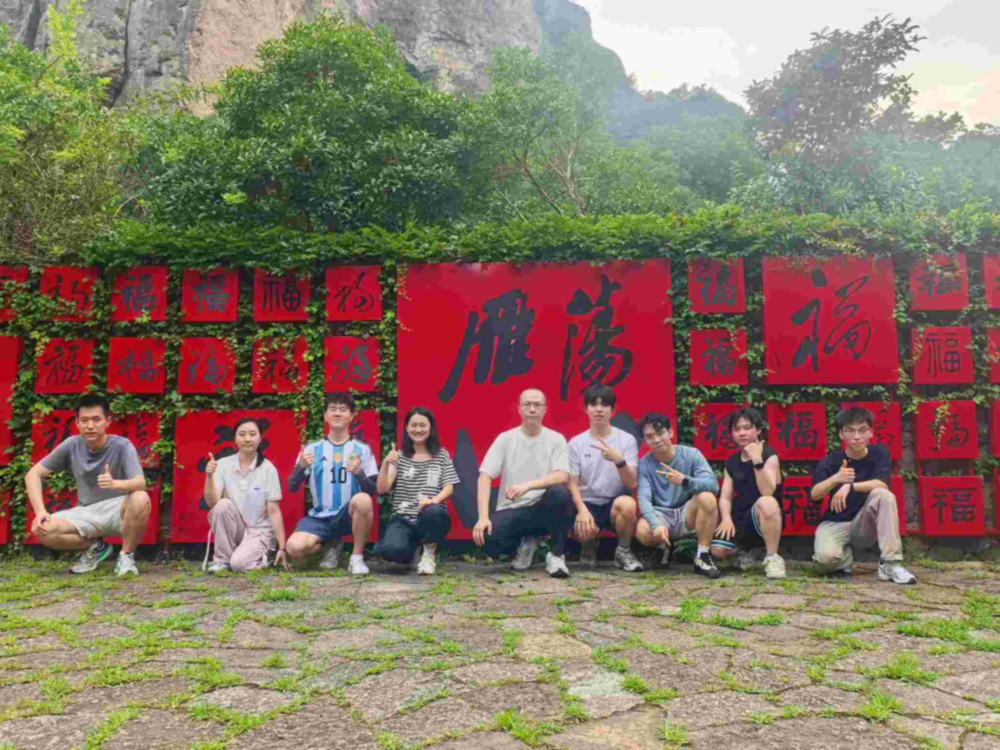
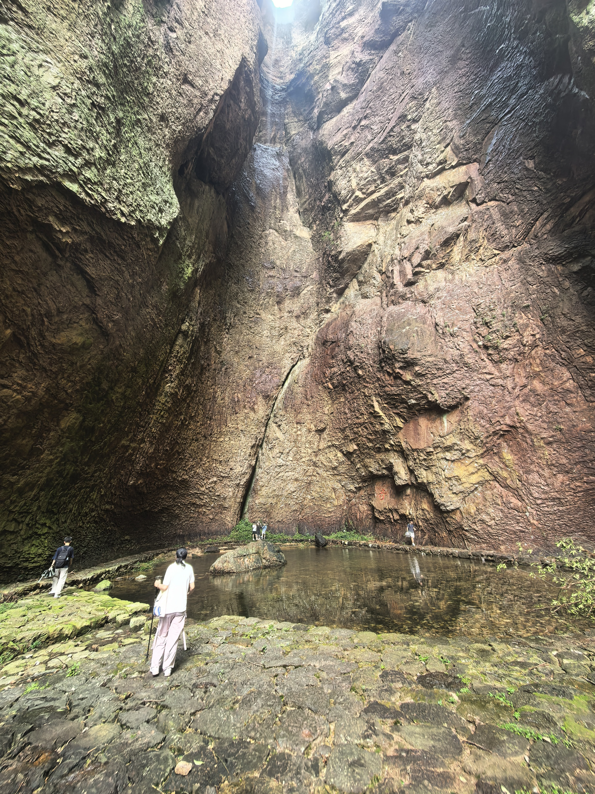
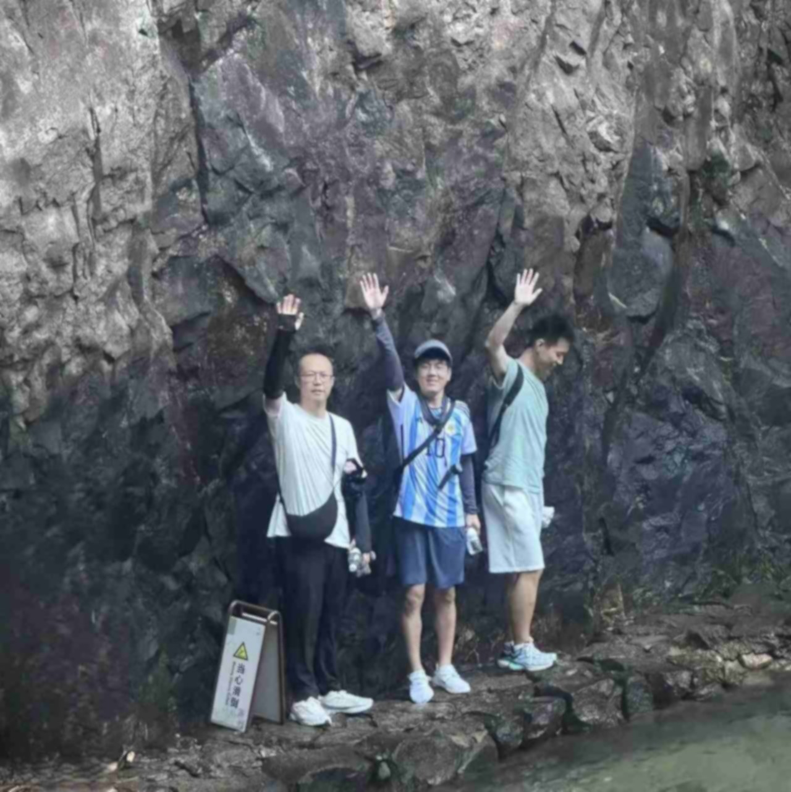
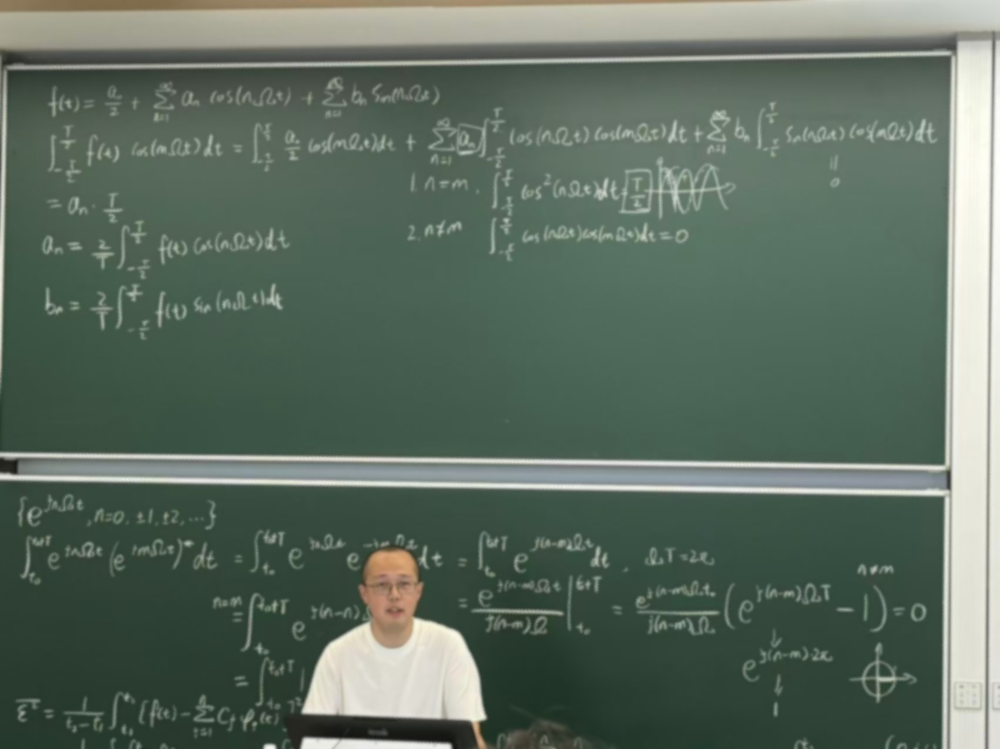
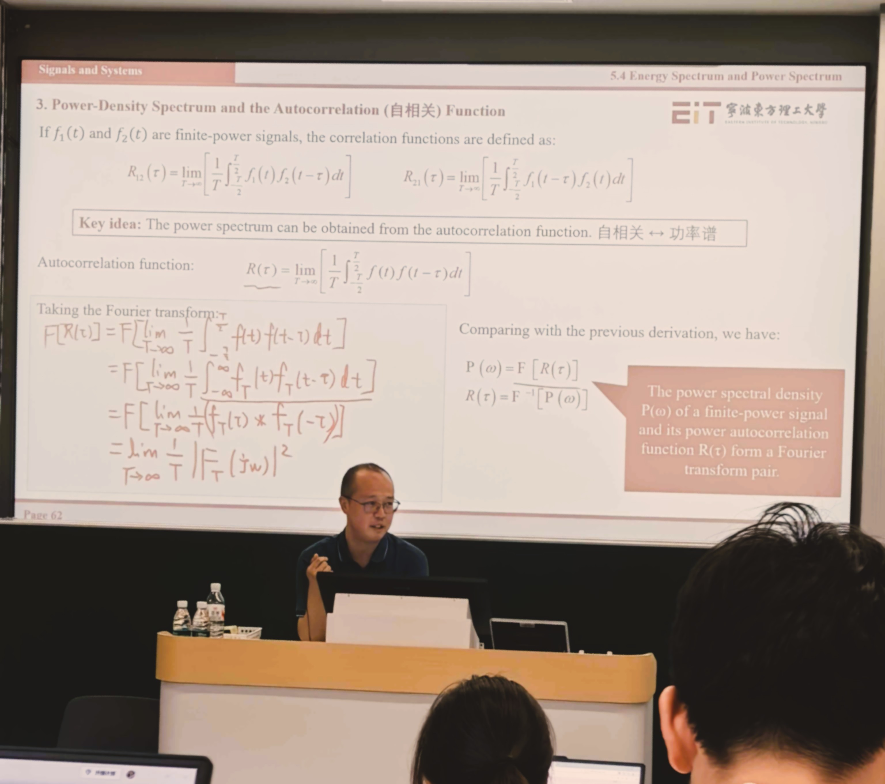
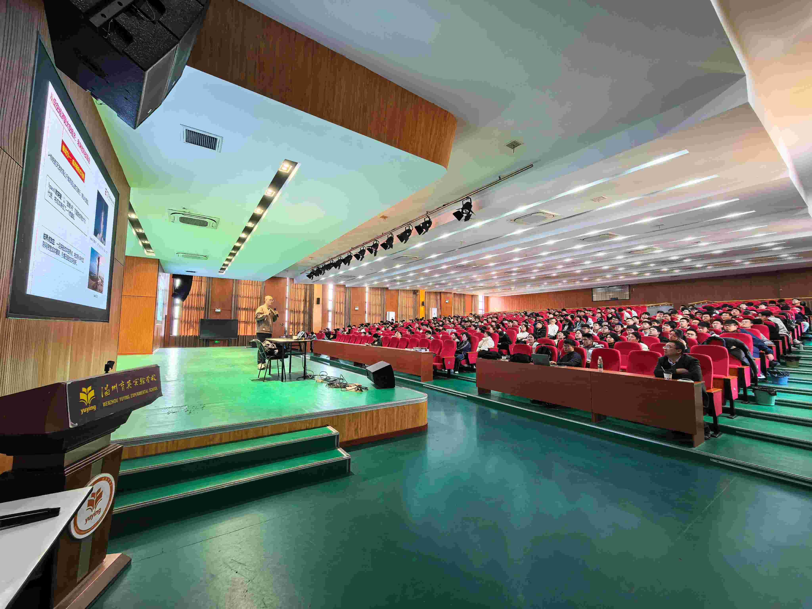
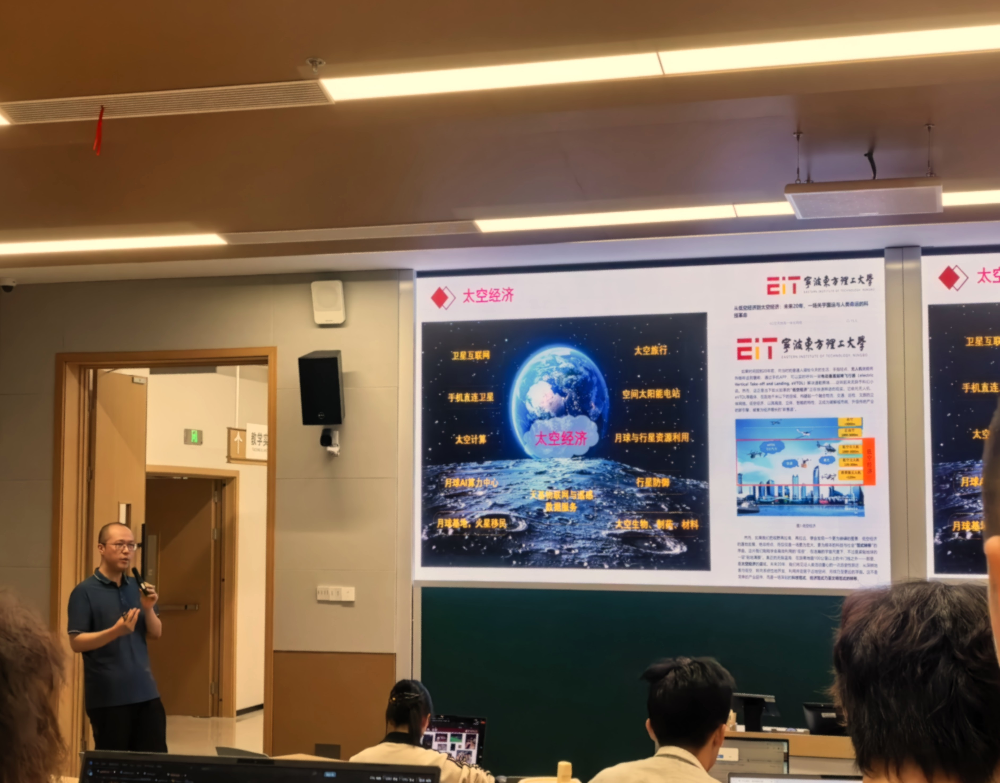
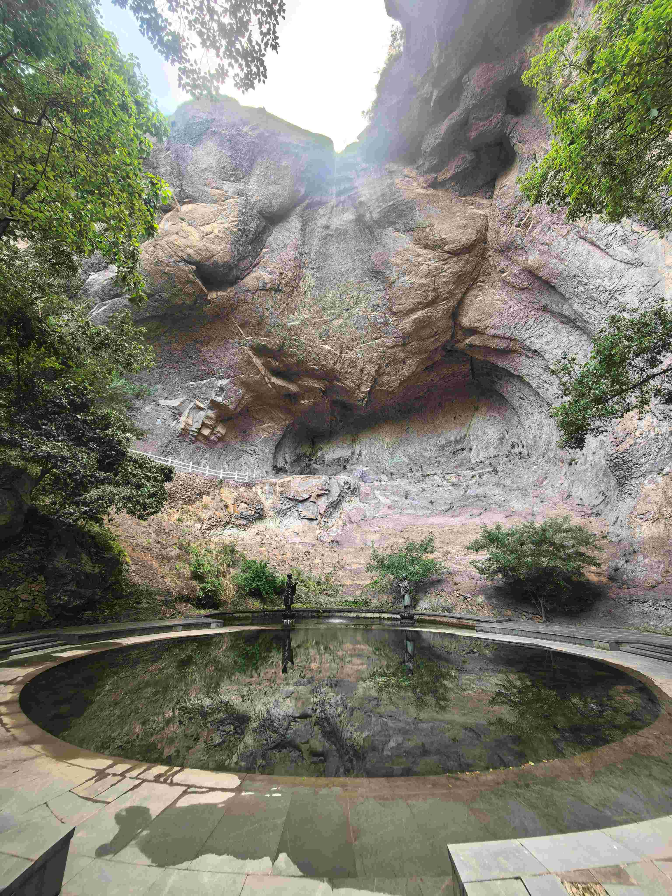

Team | 6G Space-Air-Ground-Sea Integrated Networks Laboratory
Current Members
Principal Investigator

received his B.Eng. degree in the School of Information Science and Technology at Northwest University, Xi'an, China, his M.S. degree in the School of Telecommunications Engineering at Xidian University, Xi'an, China, and his Ph.D. degree from the Department of Electrical and Computer Engineering at Virginia Tech, Blacksburg, USA. He is currently an Assistant Professor and the Ph.D. supervisor in the School of Electronic Science and Technology, Eastern Institute of Technology, Ningbo, Zhejiang, China. His current research areas are within space-air-ground-sea integrated networks, including resource management in satellite-terrestrial integrated network, satellite-borne and terminal physical-layer communication algorithms, in-space computing and space-native artificial intelligence, and preliminary research on large-scale satellite constellation networking technologies, etc.
Ph.D. Students
Joint & Direct Ph.D. Programs 10 members
received his B.Eng. degree in Electronic Information Engineering from Nantong University, Nantong, China, in June 2021 and the M.S. degree in Electrical and Computer Engineering from Georgia Institute of Technology, Atlanta, United States, in May 2023. He is currently pursuing the Ph.D. degree in the Eastern Institute of Technology (EIT), Ningbo, and Shanghai Jiao Tong University (SJTU), Shanghai, joint Ph.D. program. His research interests include space-air-ground integrated networks, cell-free massive MIMO, satellite multiple access technology, and satellite integrated sensing and communications.

received his B.S. degree in Electronic Information Engineering from Chang'an University, Xi’an, China, in 2022, and the M.S. degree in Electronic Information from Northwestern Polytechnical University, Xi’an, China, in 2025. He is currently pursuing the Ph.D. degree in the Eastern Institute of Technology (EIT), Ningbo, and Polytechnical University of Hong Kong (PolyU), HongKong, joint Ph.D. program. His research interests include non-terrestrial networks, cell-free massive MIMO, multi-channel communications, and AI-driven resource management.

received her B.Eng. degree in communications engineering at East China Normal University, Shanghai, China, in 2025. She was a research intern in the Eastern Institute of Technology (EIT), Ningbo. She is currently pursuing a direct Ph.D. degree in the Eastern Institute of Technology (EIT), Ningbo, and University of Science and Technology of China (USTC), Hefei, joint Ph.D. program. Her research interests include non-terrestrial networks, satellite MIMO technology, beam-hopping, cooperative communications, and communication theory.

received his B.E. degree in Measurement Control Technology and Instruments from Soochow University, China, in 2026. He was a research intern in the Eastern Institute of Technology (EIT), Ningbo. He is currently pursuing a direct Ph.D. degree in the Eastern Institute of Technology (EIT), Ningbo, and Shanghai Jiao Tong University (SJTU), Shanghai, joint Ph.D. program. His current research interests include artificial intelligence and optimization in space-air-ground integrated networks, satellite-borne and terminal physical-layer communication algorithms.

received his B.E. degree in Communications Engineering from University of Electronic Science and Technology of China, China and University of Glasgow, U.K., and his master's degree from Nanyang Technological University, Singapore. He was a research assistant in the Eastern Institute of Technology (EIT), Ningbo. He is currently pursuing a Ph.D. degree in the Eastern Institute of Technology (EIT), Ningbo, and Polytechnical University of Hong Kong (PolyU), HongKong, joint Ph.D. program. His current research interests include stochastic signal and system analysis for satellite-terrestrial integrated networks, and spectrum sharing technology in satellite-terrestrial integrated networks.

received his B.E. degree in Detection Guidance and Control Technology from Northwestern Polytechnical University, China. He was a research intern in the Eastern Institute of Technology (EIT), Ningbo. He is currently pursuing a direct Ph.D. degree in the Eastern Institute of Technology (EIT), Ningbo, and Shanghai Jiao Tong University (SJTU), Shanghai, joint Ph.D. program. His current research interests include beamforming and multi-user MIMO technologies for low Earth orbit (LEO) satellite communications.

received his B.E. degree in Software Engineering from Wuhan Textile University, Wuhan, and his M.S. degree in Software Engineering from Nanchang University, Nanchang. He is currently pursuing a Ph.D. degree in the Eastern Institute of Technology (EIT), Ningbo, and the University of Science and Technology of China (USTC), Hefei, joint Ph.D. program. His current research interests include space inference and training, in-space computing, and space-native AI.

received his B.Eng. degree in Communications Engineering from Northwest University, Xi'an, China, in 2027. He is currently pursuing a direct Ph.D. degree in the Eastern Institute of Technology (EIT), Ningbo, and the University of Science and Technology of China (USTC), Hefei, joint Ph.D. program. His research interests include satellite covert communications, stochastic geometry, and the modeling, analysis, and design of satellite-terrestrial integrated networks.

received her B.E. degree in Flight Vehicle Control and Information Engineering at Sichuan University, Chengdu, China. She is currently pursuing a direct Ph.D. degree in the Eastern Institute of Technology (EIT), Ningbo, and Shanghai Jiao Tong University (SJTU), Shanghai, joint Ph.D. program. Her current research interests include satellite communications, physical-layer signal processing, channel estimation, and sensing and localization.

received her B.Eng. degree in communications engineering from University of Science and Technology Beijing, Beijing, China, in 2027. She is currently pursuing a direct Ph.D. degree in the Eastern Institute of Technology (EIT), Ningbo, and Shanghai Jiao Tong University (SJTU), Shanghai, joint Ph.D. program. Her research interests mainly include the integrated design of LEO satellite communications, in-space computing, and space-native AI.
Undergraduate Students
Undergraduate Students 4 members
is an undergraduate student majoring in Electronic Science and Technology at the Eastern Institute of Technology (EIT), Ningbo, Zhejiang, China. He joined Prof. Bodong Shang’s research group in 2026. His current research interests include low Earth orbit (LEO) satellite communications and beam hopping.

is currently an undergraduate student pursuing a B.E. degree in E.E at the Eastern Institute of Technology (EIT), Ningbo, and is expected to graduate in 2029. His current research interests include the integrated design of satellite communication and computing.

is an undergraduate student at Eastern Institute of Technology (EIT), majoring in Electronic Science and Technology. He joined Prof. Bodong Shang’s research team in 2026, and his research interests focus on 6G wireless communications and space‑air‑ground‑sea integrated networks.

is an undergraduate student, has been studying at Eastern Institute of Technology, Ningbo since 2025. His current research focuses on the design, modeling, and analysis of cache in low Earth orbit (LEO) satellite networks.
Alumni
Former Members
Interns & research assistants & visiting students 9 alumni- Yunxuan Yang, research intern in 2025 (M.S. degree at Nanyang Technological University, Singapore).
- Zuoyu Liu, research intern in 2026 (B.Eng: Soochow University, China).
- Yongheng Wu, research intern in 2026 (B.Eng: Northwestern Polytechnical University, China).
- Yuanhao Wang, research intern in 2025 (B.Eng: Henan Polytechnic University, China).
- Mengmeng Zhang, research intern in 2025 (B.Eng: Northwest Normal University, China).
- Zhuhang Li, research intern in 2024 (M.S. degree at Nanyang Technological University, Singapore).
- Caiguo Li, research intern in 2024 (M.S. degree at Shenzhen University, China).
- Shiyu Xi, research intern in 2023 (M.S. student at China University of Petroleum (East China), China).
- Xiangyu Li, research intern in 2023 (M.S. degree Georgia Institute of Technology, United States).
Join Us
Eastern Institute of Technology (EIT), Ningbo is a new research-based university under active construction. EIT is invested by Yu, Renrong Education Foundation and supported by Zhejiang Provincial Government and Ningbo Municipal Government. EIT aims to be “high-level, innovative and international” and to build a teaching staff, management team, teaching and scientific research environment according to the world-class standards. EIT plans to establish four discipline groups of science, engineering, information and business as well as characteristic humanity and society discipline, emphasizing the simultaneous development of basic research and applied research, highlighting the cross-integration of disciplines, devoting itself to building a talent training system with international standards and characteristics of EIT, and training top-notch innovative talents with “solid foundation, innovative ability, deep concern for the family and the country, and international vision”.
Campus


|
Activities










